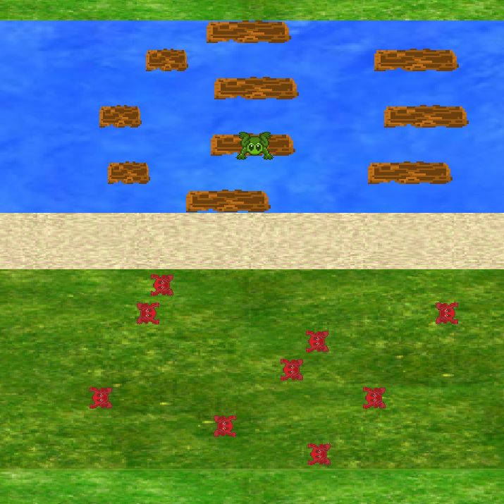

Ribit Run Game

Ribit Run was a university assignment which took inspiration from the classic 1981 game
Frogger. The aim of the game is to reach the bottom of the screen without falling from
logs and colliding with the moving enemies. The player score increases for each
successful run and the player must complete as many runs as they can without letting
their character die.
The game was programmed in C++ and SDL. This assignment was the first project I
completed which integrated SDL features.